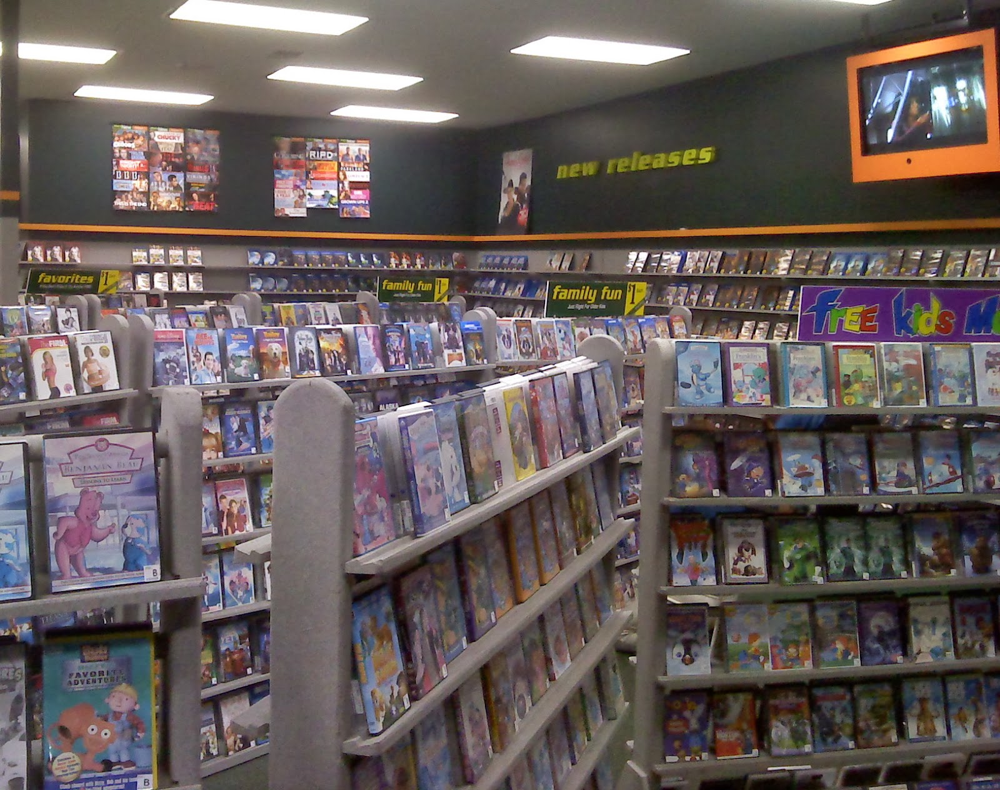

Physical media means so much to me. Ever since I was a little kid, I was entranced into the world of what these formats have to offer. From the colorful menus to the various special features, all of it fascinates me all the way to adulthood. And with the rise of streaming services over the past couple of decades, physical media has been seen as more of an afterthought with how convenient these services are. The goal of this site is to demonstrate the magic of these formats to those that are likely not familiar with how important they are or haven not experienced them in a while. Physical media matters.
*/
